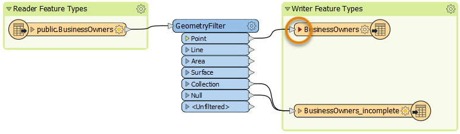
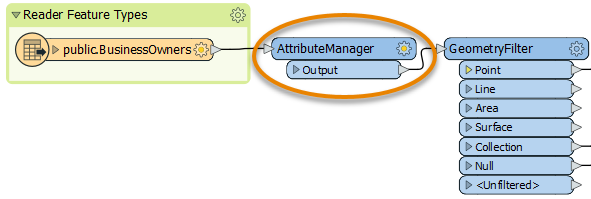
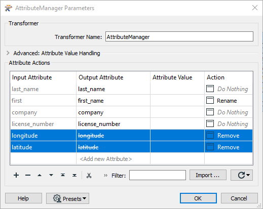
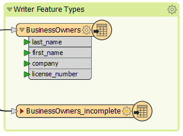

After completing this unit, you’ll be able to:
Now that Jennifer has created a workspace that edits the PostGIS data’s schema, she has to map it, telling FME how the original and new schemas are related.
She notices the triangle icon on her writer feature type has turned red.

She clicks the triangle to expand the list of attributes entering the feature type.
FME uses colored ports to indicate the status of schema mapping. In this case, the red port means an attribute exists on the writer feature type, but not on the features entering the feature type. An attribute with a red port will not cause an error when the workspace is run, but it will not have any values in the written data.
To ensure her new first_name attribute gets the same values as her existing first attribute, we have to map the new schema onto the old schema. We can use the AttributeManager transformer for that.
Jennifer clicks the black feature connection line between the reader feature type and the GeometryFilter to select it. She observes the light blue highlight indicating the line is selected.

When any object on the canvas is selected, using Quick Add will automatically connect the new object. With the feature connection line selected, Jennifer types in “AttributeManager”. The Quick Add dialog appears, letting her search transformers, readers, and writers. She finds the AttributeManager and presses Enter to add it.

The AttributeManager appears on the canvas. Jennifer double-clicks it to open its Parameters dialog.

The AttributeManager parameters are a table that defines how to modify attributes. It allows you to create new attributes, edit existing attribute names, change their order, and set their values.
Jennifer plans to use this transformer to change incoming features so their schema matches the writer feature type.
First, she clicks in the Output Attribute column for the first attribute and renames it “first_name”. Then she clicks the Move Down button to change the attribute order. Then she Shift + clicks the latitude and longitude attribute rows and clicks the Remove Row button to delete them. Her dialog looks like this:

She clicks OK. Now the attribute ports on the writer feature type all turn green, showing her schema is mapped.

However, Jennifer notices a slight problem: BusinessOwners_point looks good, but BusinessOwners_incomplete still has its original schema. How can she quickly update the schema to match the incoming features?
Jennifer knows she can use Automatic Attribute Definition mode for this task. She double-clicks on BusinessOwners_incomplete and then clicks the User Attributes tab. The first section of this dialog is Attribute Definition. By default, this is in Manual mode. However, changing this to Automatic mode will tell the feature type to simply adopt the schema of whatever features are connected to it.
Why didn’t Jennifer do this first if it was so easy? Well, she had to first edit the schema upstream using the AttributeManager. As the data flows from the reader feature type, it gets edited in the AttributeManager. These changes will be reflected automatically in the writer feature type when it is set to Automatic mode. If she left it on Manual, she would have to repeat the edits on the writer feature type.
Jennifer clicks Automatic and the schema is updated.

If she then wants to make changes, she could click Manual again. She leaves it in Automatic mode and clicks OK. Then she clicks Run.
Make sure you have followed along with Jennifer’s steps.